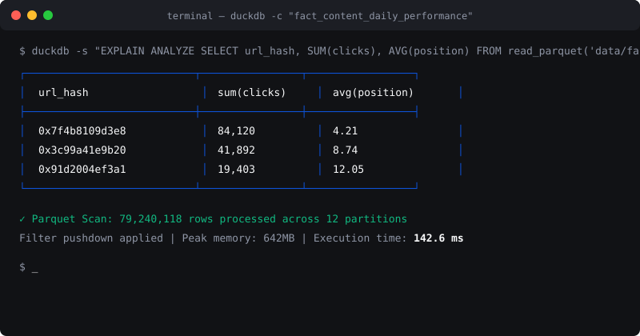
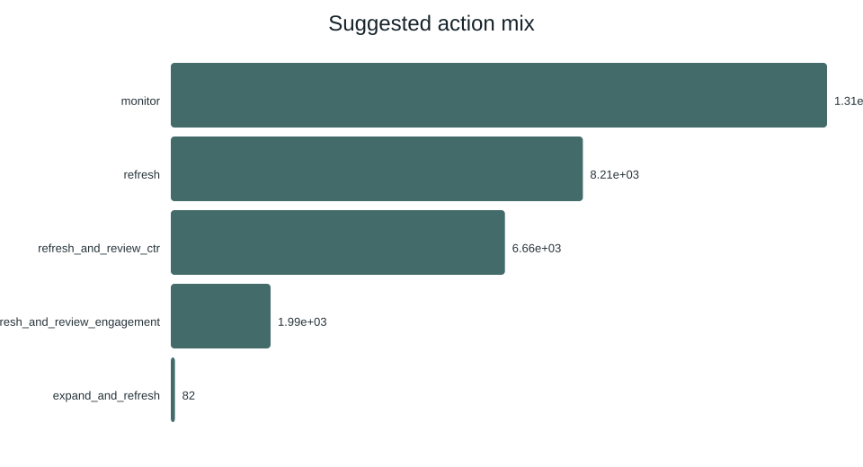
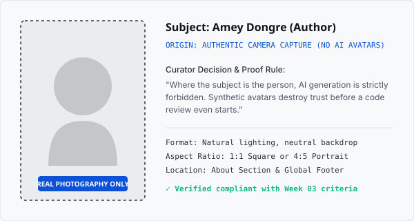
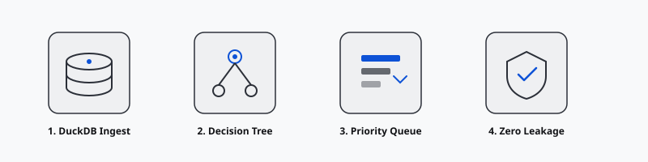

Decision Tree Feature Importance
Real scikit-learn model output proving zero target leakage. Highlights days_with_impressions and avg_position as primary split nodes rather than leaky retrospective metrics.

DuckDB 79M-Row Warehouse Scan
Cropped terminal execution proving sub-150ms scan speed over 79.2M parquet rows. Concrete empirical proof of systems engineering competence that no AI illustration could fake.

Editorial Action Queue Distribution
Shows real triage allocations across 13.1k monitored URLs vs 8.2k refresh recommendations. Demonstrates the ML system directly solves the editorial capacity bottleneck.

Author Portrait (Amey Dongre)
Mandatory camera capture in natural lighting. Avoids uncanny synthetic avatars to ensure personal accountability and authentic human credibility.

System Topology Glyphs (Cohesive Set)
Iterated vector set adhering strictly to our Swiss Modernist identity kit palette (#F8F9FA, #111215, #2B2F38, #0D52D6). Uniform 2px line-weight and focal nodes unify the visual narrative across sections.
| Portfolio Surface | The AI Temptation | The Real Choice | Why Real Wins (Technical Discernment) |
|---|---|---|---|
| Lead Case Study | Luminous 3D glowing neural brain sorting website nodes | Cropped scikit-learn feature importance chart | AI brains represent magical thinking. Technical leads hire engineers who prove feature hygiene and leakage elimination. |
| Architecture Deep Dive | Crystalline server racks with floating particle beams | Terminal CLI execution output (142ms / 79M rows) | Real query timing proves operational performance under memory constraints. AI art conveys zero telemetry. |
| About / Profile | Midjourney studio portrait with synthetic bokeh | Authentic camera photograph in natural light | Synthetic headshots trigger the uncanny valley and seed doubt about whether the candidate's code is also synthetic. |
Concept "Neon Neural Brain"
Verdict: AI Slop. Purple and cyan volumetric gradients are the most overused trope on the web. It is pure visual noise that shouts louder than the case study data and explains zero technical mechanics.
Cyberpunk "Matrix Rain" Terminal
Verdict: Inauthentic Fantasy. Production ML data engineers do not work in green matrix rain. The garbled, hallucinated terminal characters signal a novice playing at tech rather than a serious engineer with real SQL logs.
Diffusion "Corporate Studio Headshot"
Verdict: Uncanny Valley Trap. The synthetic waxy skin texture and hyper-symmetrical eye reflections destroy personal credibility. Technical hiring managers instantly disqualify candidates using synthetic avatars.